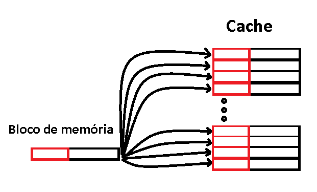
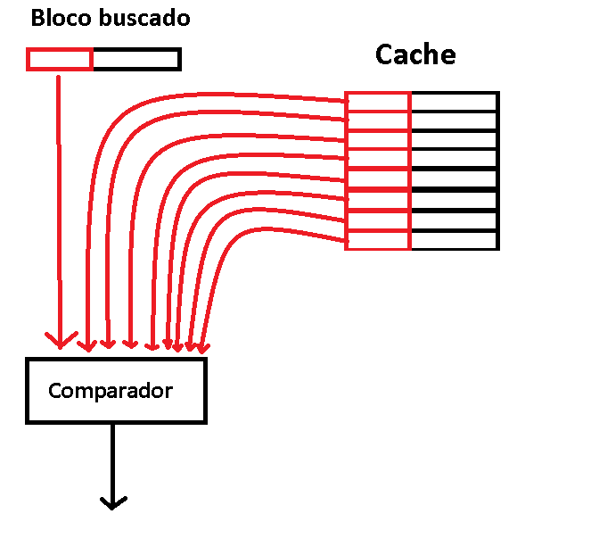

O que é?
O mapeamento associativo é uma forma de mapeamento da memória cache que busca minimizar o problema do mapeamento direto que é a taxa de colisão de dados. Para minimizar esse problema cada bloco de memória pode ser carregado em qualquer linha da cache, sem haver uma posição específica para cada endereço, diferente do mapeamento direto que segue uma fórmula. Cada linha tem uma tag que informa qual bloco de memória está carregado na linha.
Segue um esquema mostrando que um bloco de memória pode ocupar qualquer posição da cache:
Organização
Pelo modo que os blocos são organizados na cache, a organização do endereço no mapeamento associativo é quase igual ao do mapeamento direto, diferindo apenas que no mapeamento associativo não há a necessidade de haver o index, apenas há o Byte offset, Word offset e a Tag.
Portanto o endereço segue a seguinte estrutura:
- Byte offset: É usado quando há mais de um byte por palavra.
- Word offset: É usado quando há mais de uma palavra por bloco.
- Tag: Restante do endereço, é o que indentifica cada bloco da memória principal.
Vantagens
O mapeamento associativo é mais eficiente que o mapeamento direto na alocação de blocos na memória cache, pois os dados são colocados no primeiro bloco livre não havendo colisão de dados, fazendo com que os endereços mais utilizados estejam na cache a maioria das vezes.
Para visualizar melhor vamos considerar a seguinte cache de 8 blocos, organizada com mapeamento direto:

Se os endereços mais utilizados pela CPU forem os endereços 00001, 10001 e 11001 o mapeamento direto mostra-se ineficiente visto que os endereços mais utilizados estão sempre colidindo e apenas 1 consegue ficar na memória cache de uma vez.
Já no mapeamento associativo todos os endereços citados no exemplo conseguem ficar na memória cache de uma vez, logo o mapeamento associativo tem uma maior taxa de hit.
Desvantagens
Como um endereço pode ocupar qualquer posição da memória cache, a busca por um bloco específico é prejudicada, visto que para determinar se um bloco já está na cache, as tags de todas as linhas são consultadas simultaneamente.
Observe no esquema abaixo que para verificar se um bloco está na memória cache é necessário verificar a tag de todas as linhas da memória cache:
Desta maneira o circuito para possibilitar a consulta de todas as tags em paralelo é muito custoso fazendo esse tipo de mapeamento ser eficiente apenas em caches pequenas.